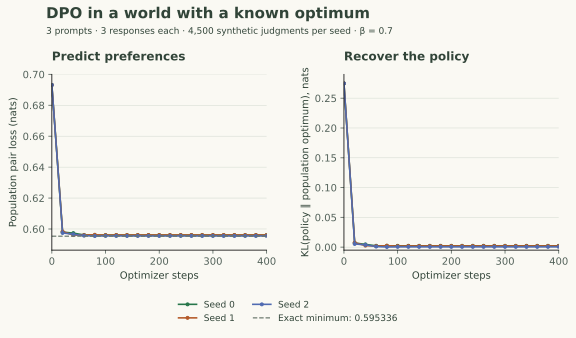

A DPO Lab You Can Verify: Exact Checks and Recorded Training Runs
Run the loss and masking checks, fit a finite response policy to synthetic preferences, and compare the learned distribution with an analytic optimum.
Run the checks before looking at the curve
Download the complete DPO lab. It requires Python 3.10 or newer and PyTorch, uses CPU execution, and downloads no model or dataset. The lab README describes the files and reproduction commands.
python -m venv .venv
# macOS / Linux; on Windows use .venv\Scripts\activate
source .venv/bin/activate
python -m pip install torch
python dpo_lab.py --check
python dpo_lab.py --train --seeds 0 1 2 --output results.jsonThe checked-in results JSON contains actual measurements, package versions, configuration, label counts, final policies, and every saved checkpoint. The recorded runs used Python 3.12.14 and PyTorch 2.14.0 with float64 arithmetic and one CPU thread. Numeric tolerances and optimization paths can vary across environments; the mathematical identities provide a more durable correctness target.
What each deterministic check establishes
| Check | Failure it catches |
|---|---|
| Worked loss and gradient coefficients | Wrong sign, missing β, or swapped pair order |
| Policy equals reference → log 2 | Incorrect reference subtraction or score mismatch |
| Reference inputs receive no gradient | Accidentally optimizing the anchor |
| Finite loss for a margin near −1000 | Unstable sigmoid-then-log implementation |
| Reward shift leaves optimal policy unchanged | Incorrect normalization of exponential weights |
| F(π) = β log Z − β KL(π ∥ π*) | Mismatch between the derived optimum and objective |
| A:B odds fixed while C changes | Mistaking observed pair fit for full-policy identification |
| Correct causal shift and ignored-position gradients | Scoring the prompt, padding, or wrong target positions |
| Padding invariance and empty-response rejection | Silent changes to the scored event |
| Expanded labels equal count-weighted loss | Confusing empirical counts with a different training target |
The masking test constructs a five-position sequence and independently sums the two log probabilities that should count. It perturbs ignored-position logits, appends padding, and inspects gradients. This verifies the reducer, not an arbitrary model’s attention implementation. A real model still needs causal attention and correct handling of padding and position IDs.
The training problem is deliberately finite
Each of three prompts has three possible whole responses. The reference distributions and true utilities are:
| Prompt | Reference probabilities (A, B, C) | Utilities (A, B, C) |
|---|---|---|
| 0 | (0.5, 0.3, 0.2) | (0, 1, −0.5) |
| 1 | (0.2, 0.5, 0.3) | (1, 0, 0.5) |
| 2 | (0.4, 0.4, 0.2) | (−0.5, 0.25, 1) |
For every unordered pair at every prompt, sample 500 binary judgments with win probability $\sigma(r_A-r_B)$ using the relevant responses’ utilities. There are nine pair types, so each seed produces 4,500 judgments. Counts store the number of left-response wins without retaining 4,500 duplicate rows.
If a pair has 350 left wins and 150 right wins, its averaged loss is $0.7\operatorname{softplus}(-m)+0.3\operatorname{softplus}(m)$. This is exactly the loss of those observed binary rows, compactly evaluated with binary_cross_entropy_with_logits. It is not arbitrary label smoothing. The DPO margin remains $\beta$ times the policy-to-reference log-odds gain.
The trainable parameters are three logits per prompt, initialized to the reference’s log probabilities. We optimize with Adam at learning rate 0.05 for 400 full-batch steps and $\beta=0.7$. No reward model, critic, or language-model rollout is involved. The known utility is used to generate labels and calculate evaluation quantities; the optimizer sees the sampled preference counts.
Separate empirical fit from population evaluation
The training loss uses each seed’s observed win frequencies. The population loss uses the exact label-generating probabilities over all nine pair types. It requires no held-out random sample because this synthetic world is known completely. We also calculate expected true utility, KL to the reference, and the regularized objective $\mathbb E[r]-\beta\,\mathrm{KL}$ over all responses.

Lines connect checkpoints saved every 20 optimizer steps. Seeds change the synthetic label samples. The dashed preference-loss line is the exact population minimum for the stated model.
Values load from the downloadable results JSON. This is a finite-response experiment, not a benchmark of language-model quality.
| Policy | Population pair loss | KL to population optimum | Reward − β KL to reference |
|---|---|---|---|
| Initial reference | 0.693147 | 0.274745 | 0.216667 |
| Seed 0 · step 400 | 0.596060 | 0.002245 | 0.407417 |
| Seed 1 · step 400 | 0.596097 | 0.001984 | 0.407599 |
| Seed 2 · step 400 | 0.595489 | 0.000432 | 0.408685 |
| Analytic population optimum | 0.595336 | 0 | 0.408988 |
The small remaining gap is expected: finite sampled comparisons do not exactly equal the population probabilities. A lower empirical training loss across two different sampled datasets does not establish that one policy is better; the population evaluation provides a shared comparison. The identity from chapter 2 gives another check: the regularized-objective gap equals $\beta$ times KL to the population optimum, averaged over prompts.
A short route through the source
Start with dpo_loss and response_logps for the reusable mathematical operations. Read optimal_policy and objective alongside the derivation. Then follow train: construct true pair probabilities, sample counts with a dedicated generator, compute reference-relative margins, optimize, and record diagnostics before each selected update.
The standalone plotting script reads the JSON and regenerates the SVG with Matplotlib. It does not rerun training or fabricate intermediate measurements. The experiment covers the loss and finite-policy identification; it does not exercise a tokenizer, chat template, distributed model, or real preference evaluator.
Three modifications with testable predictions
- Reduce judgments per pair. Predict larger variation between the empirical optimum and the known population target. Compare several label seeds.
- Remove every comparison involving C. Predict that the A:B score remains identifiable while the full policy is no longer determined by those observations alone.
- Replace sampled labels with exact win probabilities. Predict convergence closer to the analytic optimum when optimization is sufficient. This isolates finite-data error from optimization error.
Preserve the modified configuration and evaluate against the same defined population objective. If you change $\beta$, recompute the analytic target: the old optimum belongs to a different reward–KL tradeoff.
Check your understanding: Does this successful lab prove DPO will improve a real language model?
No. It verifies the mathematics in a fully specified small world. Real training adds representation limits, tokenization, data coverage, judge reliability, and evaluation questions. Those require their own checks rather than being inferred from this toy result.